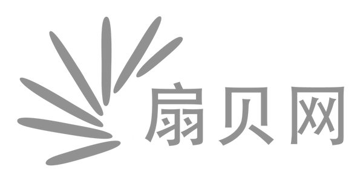

their
recent
tree
commercial
collect
chief
temperature
compete
atmosphere
channel
constitute
tennis
girlfriend
closet
govern
cancel
cooperate
sympathy
cease
projection
delegate
polite
applaud
transcript
broaden
descriptive
graze
Preheat
whereby
juicy
flux
angular
revitalize
entourage
temp
miscarriage
septic
harmonic
subcontractor
Zulu
intelligentsia
repulse
insubstantial
denouement
trophic
caraway
obfuscate
weatherproof
retinol
17bdc.com
show result